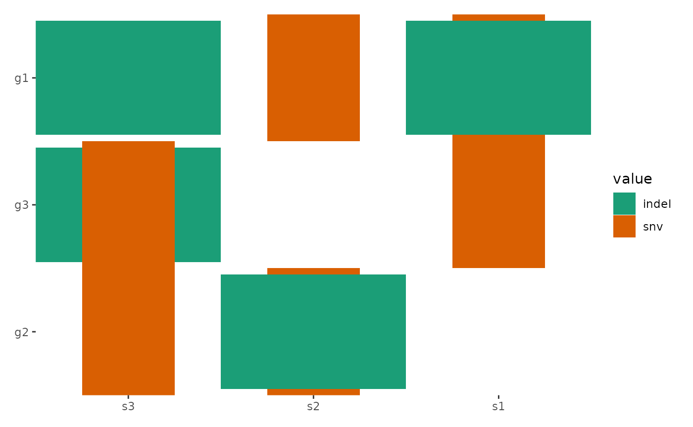

library(ggalign)
#> Loading required package: ggplot2
#> Warning: S3 method 'ggplot_add.continuous_ggalign' was declared in NAMESPACE
#> but not found
set.seed(123)
small_mat <- matrix(rnorm(81), nrow = 9)
rownames(small_mat) <- paste0("row", seq_len(nrow(small_mat)))
colnames(small_mat) <- paste0("column", seq_len(ncol(small_mat)))Can I change the default data for all geoms?
All function in ggalign requires specific data formats
for its operations. If you need to transform or filter data for
individual geoms, you can use the data
argument within each geom. However, if you have multiple
geoms and want a consistent transformation applied across
all, you can utilize the scheme_data() function which
allows you to transform the default data for all additive geoms.
Why are there spaces after setting all plot.margin to
zero?
By default, ggalign doesn’t add spaces between plots. If you notice spaces, they are likely due to:
- Plot margins within individual plots.
- Scale expansion automatically added by ggplot2.
You can resolve this by removing the scale expansion and adjusting the margins in the theme:
ggheatmap(small_mat) +
anno_top() +
align_dendro(aes(color = branch), k = 3L) +
scale_y_continuous(expand = expansion()) &
theme(plot.margin = margin())
#> → heatmap built with `geom_tile()`
Why can’t I add two dendrograms with different reorder
settings?
Note: We always prevent users from reordering layout direction twice.
When reorder_group = FALSE is used, reordering of the
heatmap occurs within each group. As long as the ordering within each
group remains consistent, these two dendrograms can be placed on the
same axis of the heatmap.
Let’s assume that panels represents the group for each observation and index represents the ordered index of the observations.
In the code provided, panels is initialized as ungrouped and index as unordered:
panels <- NULL
index <- NULL
set.seed(2L)
group <- sample(letters[1:3], ncol(small_mat), replace = TRUE)
h <- ggheatmap(small_mat) +
anno_top() +
align_group(group)When we add a dendrogram with reorder_group = FALSE;
this’ll do something like this (Since
reorder_group = FALSE, the panels won’t be
changed):
h1 <- h + align_dendro(reorder_group = FALSE, merge_dendrogram = TRUE)
# always remember dendrogram will initialize the index, here, we extract the
# index from the underlying dendrogram
index <- stats::order.dendrogram(ggalign_stat(h1, "top", 2L))However, if a dendrogram with reorder_group = TRUE is
then added, it will reorder the panels, so the underlying index will be
changed:
h2 <- h + align_dendro(reorder_group = TRUE, merge_dendrogram = TRUE)
new_index <- stats::order.dendrogram(ggalign_stat(h2, "top", 2L))
all(index == new_index)
#> [1] FALSETo prevent reordering of the axis twice, we ensure that the
new_index matches the index (if
index is not NULL). This is done to maintain consistency
and prevent conflicts in the ordering of the heatmap.
Session information
sessionInfo()
#> R version 4.4.2 (2024-10-31)
#> Platform: x86_64-pc-linux-gnu
#> Running under: Ubuntu 22.04.5 LTS
#>
#> Matrix products: default
#> BLAS: /usr/lib/x86_64-linux-gnu/openblas-pthread/libblas.so.3
#> LAPACK: /usr/lib/x86_64-linux-gnu/openblas-pthread/libopenblasp-r0.3.20.so; LAPACK version 3.10.0
#>
#> locale:
#> [1] LC_CTYPE=C.UTF-8 LC_NUMERIC=C LC_TIME=C.UTF-8
#> [4] LC_COLLATE=C.UTF-8 LC_MONETARY=C.UTF-8 LC_MESSAGES=C.UTF-8
#> [7] LC_PAPER=C.UTF-8 LC_NAME=C LC_ADDRESS=C
#> [10] LC_TELEPHONE=C LC_MEASUREMENT=C.UTF-8 LC_IDENTIFICATION=C
#>
#> time zone: UTC
#> tzcode source: system (glibc)
#>
#> attached base packages:
#> [1] stats graphics grDevices utils datasets methods base
#>
#> other attached packages:
#> [1] ggalign_0.0.5.9000 ggplot2_3.5.1
#>
#> loaded via a namespace (and not attached):
#> [1] vctrs_0.6.5 cli_3.6.3 knitr_1.49 rlang_1.1.4
#> [5] xfun_0.49 generics_0.1.3 textshaping_0.4.1 jsonlite_1.8.9
#> [9] labeling_0.4.3 glue_1.8.0 colorspace_2.1-1 htmltools_0.5.8.1
#> [13] ragg_1.3.3 sass_0.4.9 fansi_1.0.6 scales_1.3.0
#> [17] rmarkdown_2.29 grid_4.4.2 tibble_3.2.1 evaluate_1.0.1
#> [21] munsell_0.5.1 jquerylib_0.1.4 fastmap_1.2.0 yaml_2.3.10
#> [25] lifecycle_1.0.4 compiler_4.4.2 dplyr_1.1.4 fs_1.6.5
#> [29] pkgconfig_2.0.3 farver_2.1.2 systemfonts_1.1.0 digest_0.6.37
#> [33] R6_2.5.1 tidyselect_1.2.1 utf8_1.2.4 pillar_1.9.0
#> [37] magrittr_2.0.3 bslib_0.8.0 withr_3.0.2 tools_4.4.2
#> [41] gtable_0.3.6 pkgdown_2.1.1 cachem_1.1.0 desc_1.4.3